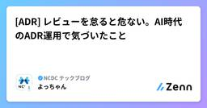

NCDC テックブログのフィード
https://zenn.dev/p/ncdc
NCDC株式会社( https://ncdc.co.jp/ )のテックブログです。 主にエンジニアチームのメンバーが投稿します。 募集中のエンジニアのポジションや、採用している技術スタックの紹介などはこちら( https://github.com/ncdcdev/recruitm
フィード

Claude Codeに「理解しやすい日本語」を書かせるためにやっていること
NCDC テックブログのフィード
はじめに先日、私が Claude Code に書かせて投稿した GitHub Issue に対して、社内の Slack で、こんなコメントがありました。AIを使って書かれたIssueなんだろうけど、ここまでスッと入ってくる文章にアウトプット調整するのめちゃくちゃ難しいんじゃないか。全体見て結構手入れてるのかな実際には、該当の Issue は Claude Code 任せで人力で修正はしていませんでした。というのも、この Issue は自分で対応する前提だったので、記載内容は他の人に読んでもらうというより備忘録程度のつもりでいたためです。とはいえ何もしていないわけではなく、...
2日前

Reactライクにエージェントを開発？ - Flueの宣言的エージェント開発入門
NCDC テックブログのフィード
エージェントフレームワークというと、まず思い浮かぶのは「ツールを定義して、プロンプトを書いて、ワークフローをつなぐ」みたいな形だと思います。Flueは少し違います。エージェントを静的なオブジェクトではなく、Hooksで「モデルができること」を定義する関数として書くフレームワークです。公式の説明では、FlueはReact-like hooks APIでエージェントを構築するためのフレームワークとされています。Flue is the open agent framework, from the creators of Astro. Use a React-like hooks API...
2日前

OLTP脳でBigQueryに入門してみた（PostgreSQL・DynamoDB経験者向け）
NCDC テックブログのフィード
はじめに今までPostgreSQLやDynamoDBを触ってきました。そんな私が、BigQueryに入門してみた記事になっています。 対象読者PostgreSQL（リレーショナルデータベース）を触ったことあり、BigQueryに入門しようとしてる方DynamoDBを触ったことがあり、BigQueryに入門しようとしてる方 BigQueryとはBigQueryはGoogle Cloudが提供する サーバーレスのデータウェアハウスです。自分的キーワードは以下です。SQLでペタバイト規模のデータを高速分析できるサーバーレスでインフラ管理不要コスト面で注意必要...
3日前

[ADR] レビューを怠ると危ない。AI時代のADR運用で気づいたこと
NCDC テックブログのフィード
はじめにある案件で、フロントエンドが扱う認証トークンをどう保持するか、というADR[1]をまとめる機会がありました。しかも今回は、後々AIに実装を任せることまで見越した内容にしようと思い、AIを使って文体を整えたり設計を具体化したりしながら作成を進めていました。ところが、いざ作成を進めてみると「ADRだから大丈夫」では済まされない落とし穴があることに気づきました。今回はその話を書いてみます。!実際のADRは業務上の非公開情報のため、具体的なシステム構成や固有名詞はすべて出さず、一般化した形で書いています。 そもそもなぜ「AIに実装を任せる前提」でADRを書いたのか...
5日前

Goのポインタに抵抗を感じていた理由
NCDC テックブログのフィード
はじめにGoに初めて触れたとき、ポインタを使うことに少し抵抗を感じていました。例えば、次のようなコードです。func update(user *User) {user.Name = "Bob"}その抵抗感の正体を考えてみると、PHPを書いていた頃の「参照渡しへの警戒心」が関係していました。しかし、改めて調べてみると、PHPの参照渡しとGoのポインタは仕組みとしては別物です。ただ、なぜ警戒していたのかを掘り下げると、両者には共通する部分もありました。 なぜ抵抗を感じたのかポインタそのものが難しいというより、「PHPの参照渡しと同じようなものでは？」と勝手にイメー...
10日前
毎朝 CloudWatch を見回るエージェントを作ってみたら、翌朝さっそく仕事をしてくれた話
NCDC テックブログのフィード
はじめにみなさん、AIエージェントは作っていますか？AWSにはAgentCoreというAIエージェントを動かすための便利なサービスがあります。また、Strands AgentsというAWS発のAIエージェントを構築するためのライブラリがあります。私は仕事でAIエージェントを作ることはそれなりにあるのですが、\overset{\tiny むちゃぶり}{\footnotesize 要件や制約} により複雑な構成になりがちだったりします。たまには Strands Agents + AgentCore の構成で汎用的でシンプルなAgentでも作ってみたいと思い、実際に作ってみました。...
11日前
Figmaのカラープロファイルはどちらを設定すべき？（sRGB・Display P3）
NCDC テックブログのフィード
要点プロダクトの閲覧デバイスに制限がない場合、sRGBを推奨プロダクトの閲覧デバイスがApple製品に限られる場合、Display P3を使うことも可能 はじめに2026年8月現在、Figmaで選択できるカラープロファイルは2種類あります。sRGBDisplay P3本記事ではカラープロファイルの役割と、上記2種類の違いについて解説します。カラープロファイルの設定方法はFigmaドキュメントを参照ください。 カラープロファイルとはカラープロファイルは、表現できる色の範囲（色域）の定義です。RGBなどの数値と色をどのように紐付けるか定められています。...
12日前
ねじれない文章で読みやすいドキュメントへ
NCDC テックブログのフィード
はじめにAI駆動設計は昨今ますます浸透してきており、現在自分ではほぼドキュメントを書いていないという方も珍しくないと思います。一方で、人間にとって読みやすく分かりやすいドキュメントの生成には、まだプロンプトエンジニアリングが必要という側面もあります。人間が読んでいて理解に時間がかかる例として、「文章のねじれ」が挙げられます。主語と述語が対応していないことが原因で起こります。「ねじれ」を別の言葉で表現すると、文章を読んだときの「違和感」ともいうことができます。ねじれのある文章は、一見すると理解可能なのですが、正確に理解したい場面では意味の特定に時間がかかります。この記事で...
13日前
社会から「AIエージェント」は求められていないのかも
NCDC テックブログのフィード
はじめにみなさん、仕事でAIエージェントは使っていますか？最近のエンジニアならほぼ全員の答えが「Yes」になるかと思います。ですが、非エンジニアでは、そうでもなかったりします。最近聞いて個人的に驚いた話があります。「生成AIは抵抗無く使うけど、AIエージェントは避けたい」と考える人が一定数いるらしいのです。つまりChatGPTやGeminiで文章を作ったり調べ物をしたりするけど、エージェントに業務を任せるのは嫌という人たちです。AI全般に拒否反応を示すのではなく、そこに線を引くんだとびっくりしました。どうやら「生成AIは会社から推進されるから使うけれど、自律的に動くエージェ...
13日前
Prompt Cacheから見るコーディングエージェント運用のTips
NCDC テックブログのフィード
Prompt Cacheという観点からコーディングエージェント運用のちょっとしたTipsいくつか紹介します。Prompt Cacheと一口に言っても、モデルプロバイダによって仕様が異なる点があると思うので、今回は Claude に絞ってその仕組みを追っていきます。 Prompt Cache とは何かPrompt Cache とは何なのか、という話の前にコーディングハーネスがどんなものかを知っておく方が今後の話がしやすいので少し書こうかと思います コーディングハーネスについてコーディングハーネスとは何かというと、コーディングというタスクをモデルが実行するために必要な道具（re...
16日前
ぼくのかんがえたさいきょうのCornixせってい ~最小限の運指で全ての操作を完結させ、モニターを1枚減らせた究極のキーマップ~
NCDC テックブログのフィード
Keychronとギズモード・ジャパンが共同開発したKeychron Orca echoのクラウドファンディングが6億円に迫るなど、分割キーボードが最近盛り上がってきていますね！私は、昨今の盛り上がりの火付け役となったと思われるCornixを使っているのですが、いろいろと試行錯誤しながら設定を変えてきました。変更するたびに毎回「今回は完璧だな！」と思うのですが、その後にさらに良い設定を思いついたり、変更してみたら不都合が生じたりして、何度も何度も変更してきました。今回こそ完璧にできたと思うので、ここにその最強の設定をまとめておきます。もうこれ以上の設定はないはずなので、ここから変更す...
17日前
DynamoDBの基礎を振り返りながら、ベクトル検索機能を理解する
NCDC テックブログのフィード
はじめに2026年8月5日、Amazon DynamoDBでのベクトル検索の一般提供が発表されました。運用データとともにベクトル埋め込みをDynamoDBに保存し、別のベクトルストアにデータを複製することなく、そのデータに対して直接類似度検索を実行できるようになっています。https://aws.amazon.com/jp/blogs/news/amazon-dynamodb-now-supports-real-time-vector-search-at-any-scale/Amazon DynamoDBのベクトル検索を触り始めたとき、最初は新しい概念をゼロから覚える必要がある...
17日前
ADRはAI駆動開発の武器になるが、負債にもなるかもしれない
NCDC テックブログのフィード
はじめに個人的に、昔から設計書を細かく書くのは嫌いです。特にコードとほぼ同じ粒度で書かれた詳細設計書は負債にしかならないと思っています。生成AIが流行る少し前から「ADR（Architecture Decision Record）を書こう」という話を聞くようになりましたが、やはりドキュメントの一種ということで、個人的には重視していませんでした。「なぜその設計にしたか」を記録する文化自体は良いものだと思いつつ、他のドキュメントと同様、いずれ書かれなくなるか、古びて読まれなくなるのだろう、くらいの認識でした。その後、AI駆動開発が本格的になるにつれて、この認識は変わってきました。意...
18日前
[S3] 署名付きURLの仕組みについて、なんとなくからもう一歩踏み込みたい
NCDC テックブログのフィード
はじめにS3の署名付きURLって、なんとなく「一時的にアクセスできるURLでしょ」くらいの理解で使っていませんか？自分もずっとそのレベルで使っていたのですが、改めて「どうやって署名が検証されているのか」「サーバーとS3が別々なのになぜ検証できるのか」を突き詰めて考えると、意外と知らないことが多いなと感じました。この記事では、そういった大枠でしかわかっていなかった部分を具体化して理解を深めることを目的に、署名付きURLの仕組みを整理してみようと思います。 署名付きURLとは一言で表すなら、「一時的にS3へのアクセス権を委譲する、期限付きの特別なURL」です。通常、S3の...
19日前
個人Webアプリの構成を再考して、マルチクラウドになった話
NCDC テックブログのフィード
はじめに嫁さんが個人事業主として働いており、事務作業も自分で行っているため、その負担を減らすアプリを個人開発しています。当初は事務作業が少し楽になればいいね、くらいの気持ちで私も暇つぶしとして作っていました。機能を増やすとメンテナンスの手間も増えますし、クラウドに毎月お金がかかるのも避けたかったため、もともとはReactのSPAとして作っていました。HTMLを配信するだけの単純な構成です。しかし、ニーズからデータを持つ必要性がでてきました。付随して、認証やバックエンドが必要になったため、重い腰をあげて今後の構成を考え直すことにしました。その結果、フロントエンドのホスティングを...
21日前
[Claude Code] AIの説明が「それっぽいだけ」で終わる問題を、Skill設計で解決した話
NCDC テックブログのフィード
はじめに以前、新しく参画するプロジェクトのキャッチアップに、AIを使ったことがあります。「このリポジトリを読んで、アーキテクチャをまとめて」と気軽にお願いしたら、それらしいレポートが思ったより早く出てきました。ただ、実際に読んでみると「ECSでバックエンドを動かしています」これで終わりました。いや、それは知ってる。聞きたいのは「じゃあどう動いてるの？」の方です。ALBを経由しているのか、セキュリティグループはどう制限されているのか、そこが全然分からず知りたい情報に辿り着けませんでした。読んだ気にはなるのに、次の作業に進めるだけの具体性が一切ない。今回、自分用に「...
1ヶ月前
Coding Agent Insightsが来たので、Claude CodeのOtel送信先をAWSに移行しました。
NCDC テックブログのフィード
!先に結論を書いておくと、はっきり言って現時点(2026/08/01)のCoding Agent Insightsは、データ収集の動作確認程度にしか使えません。AWSにデータを集約するなら、最初からカスタムダッシュボードを作る前提で考えることを強くおすすめします。 はじめに現在業務で、AnthropicのClaudeをTeamプランの契約で使えるようにしています。Teamプランでは管理コンソールから各メンバーのClaude Codeに設定を一括配布できる「Managed Settings」という機能があります。管理者がコンソールにJSONを登録しておくと、メンバー側は何もしな...
1ヶ月前
ECS・SQS・LambdaをOpenTelemetryで計装する分散トレーシング
NCDC テックブログのフィード
はじめにECS → SQS → Lambdaという構成は、AWSでバックエンドを組んでいるとよく出てきます。一方で、障害調査などで一連の処理を追おうとすると、SQSの前後でログや実行環境が分かれ、ECSからLambdaまでの流れをひと続きに把握しづらくなります。せっかく分散トレーシングを入れるなら、非同期処理も含めて追えるようにしたい。そこで、OpenTelemetryとX-Rayを使い、ECSからSQSを経由してLambdaへ渡る処理を実際に組んでみました。X-Ray SDKからOpenTelemetryへの移行は公式にも案内されています。その一方で、X-Ray SDKとOp...
1ヶ月前
開発初心者のAWSデビューには、Amplify Gen2 よりも AWS Blocks を薦めたい
NCDC テックブログのフィード
はじめにこの記事は、「これから開発を始めたい」「AIエージェントを使ったバイブコーディングでアプリを作って、AWSにデプロイしたい」という人に、AWS Blocks を薦める記事です。AWS Blocks は、2026年6月にパブリックプレビューが公開されたOSSフレームワークです。TypeScriptでバックエンドのコードを書くと、そのコードがそのままAWS上のインフラになる、IfC（Infrastructure from Code）と呼ばれるカテゴリのツールです。AWSでフルスタック開発を始めようとすると、同じくTypeScriptのコードファーストで開発できる Ampli...
1ヶ月前
検索画面のUI設計で、バックエンドエンジニアが早めに口出しすべき3つのこと
NCDC テックブログのフィード
はじめに検索画面のUIを決める会議では、「この条件、とりあえずあいまい検索でお願いします」「並び替えはとりあえず全部入れましょう」といったやりとりがよく発生します。その結果、後からバックエンドで検索速度に困る、という経験を何度かしました。私が働いているNCDCでは、PMだけでなくデザイナーやエンジニアも要件定義や基本設計の会議に参加することが多いです。業務システムの画面は、デザイナーさんが作ったFigmaを元にお客さんとUIを決めていくのですが、議論の主体はデザイナーさんで、エンジニアは気になった時だけ発言する、というスタンスが多いかなぁと思います。本記事では、業務システムの検...
1ヶ月前